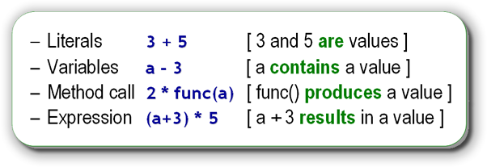
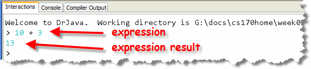
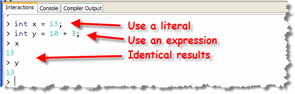

A computer system consists of hardware, (the physical parts of your computer), and software (the programs used by the hardware), both working together to carry out the different steps of the information processing cycle.
These are the steps that your computer goes through to turn
data into information. We can abbreviate these steps as
I (input), P (processing), and O (output)
- Input is retrieving the data to work on. You learned
how to do that with the
Scannerclass. - Output is displaying the results of your program's
calculations. You learned to do that with the
System.outobject, and itsprintln()method.
That leaves us with the last step—Processing—organizing, analyzing, modifying and manipulating the input to produce the desired output.
We'll start by tackling the simplest kind of processing:
using arithmetic expressions to perform numerical
calculations. Later, you'll work with more
sophisticated mathematical expressions as well as processing
involving Strings, Pictures,
Turtles, PongBalls,
PlayingCards, and many other objects.
Arithmetic Expressions
Primitive values are manipulated via
operators using expressions.
While expressions like those shown in this picture are cute,
that's not exactly what we'll be talking about. What, exactly, do
we mean by "an expression" in the context of a Java
program? Here's a formal definition:
Well, that's not very helpful; what is an operand? What is an operator? What is evaluation? What do those words mean? Let's look.
Operands
An operand is simply a symbol that indicates a value or storage location in memory. Operands include:
- Literals: which represent a value
- Variables: a storage location containing a value
- Method calls: which can produce a value
- Sub-expressions: which compute a value
Here are some examples:

The important thing to see is that all operands are just different ways of specifying values or data.Operators
An operator is a symbol that is used to perform a calculation on one or more operands and, subsequently, produce a value. Operators have three important characteristics:
- Arity: the number of operands required. Some operators require only a single operand; we call these unary operators. Most operators require two operands; we call these binary operators. Finally, one Java operator requires three operands; the ternary, (or tertiary), conditional operator.
- Precedence: this characteristic helps determines the order in which operations involving multiple operators are performed. Operations that have higher precedence are performed before operations that have lower precedence. (This is a slightly different definition than that used in C and C++.)
- Associativity: this characteristic determines whether operations involving multiple operators at the same level of precedence should proceed from right-to-left, (called right-associative), or from left-to-right, (called left-associative).
Arithmetic Operators
Here are the five basic arithmetic operators that can be applied to any numeric type. Each of these is a binary operator:
| Operator | Meaning |
|---|---|
| + | Addition (or unary plus) |
| - | Subtraction (or unary minus) |
| * | Multiplication |
| / | Division (integer and true/real) |
| % | Remainder or modulus (integer and real) |
The Results
When operators and operands are combined, each operator
is applied to its operands, and a temporary value is
calculated and stored in memory. Here's an example expression:

This expression uses two literal operands as well as the addition (or binary plus) operator. This expression produces or creates the temporary value 13. The value produced by the expression can be used wherever a literal value can be used. For instance, both of these declarations store identical
values into their respective variables:

Much of the time, a temporary value is all you need. If you need to store the result of an expression, however, you can use Java's assignment operator to copy the temporary value into a variable.
Numeric Operations
Java has the five arithmetic operators that work on both integers and floating point numbers (or a combination of the two). Most of five operators are self-explanatory, although you might find the remainder and division operators a little tricky if you've never programmed before, or if you've programmed in a different language, such as Python 3.
Here are some integer variables and numeric expressions. What values do you suppose each of the following variables will hold after each expression is evaluated?
int a = 7, b = 12; // Initial values
int diff = b - a;
int product = b * a;
int quotient = b / a;
int remainder = b % a;
As you might expect, the variable diff will contain
the value 5, the variable product will contain the
value 84. How about the last two?
Integer Division
You might be surprised to find that the variable
quotient ends up containing the value 1,
and not the fractional number 1.74. Because both
a and b are integers, Java performs
integer division when it encounters the / operator.
In some computer languages, different symbols are used for different kinds of division (integer or real). In Java, the same symbol is used for both. If one of the operands is a floating-point number, then real division is performed. If both are integers, then integer division is carried out.
Integer division works like the division you learned in grade
school. You draw a little house on the board and put the
number you want to divide (called the dividend) inside the
house.
 You draw the number you want to divide by (the divisor),
standing at the front door of the house like a visitor.
You then ask yourself, "how many visitors" could fit inside
the house and place that number on the roof. This is the
quotient. You multiply the quotient by the divisor, place the
result underneath the dividend and subtract. The remainder
is anything left over down in the basement, 8 in the example
on the left and 3 in the example on the right.
You draw the number you want to divide by (the divisor),
standing at the front door of the house like a visitor.
You then ask yourself, "how many visitors" could fit inside
the house and place that number on the roof. This is the
quotient. You multiply the quotient by the divisor, place the
result underneath the dividend and subtract. The remainder
is anything left over down in the basement, 8 in the example
on the left and 3 in the example on the right.
When you perform integer division in Java, the quotient is calculated, but the remainder is discarded. It's important that you understand that when you divide two integers, the result is truncated, not rounded. With real division, 15/4 would be 3.75 but with integer division, it's just 3, not 4 as it would be if the 3.75 was rounded.
The Remainder Operator
The % or remainder operator (also sometimes called the modulus operator) does exactly the same thing, except, instead of returning the quotient portion from the roof, it returns the remainder from the basement. If you were to divide 12 by 7, the quotient would be 1, since there is one 7 in 12. 12 % 7, though, is 5 because that's what's left over after dividing 12 by 7.
The only tricky part about this is what happens if either the divisor or the dividend, (or both) are negative. Some languages prohibit the operation in that case, but in Java you just ignore the sign while calculating the result, and then the result is given the same sign as the numerator (that is, the dividend).
The remainder operator is useful in a couple of different situations. If you were writing an electronic cash register program for children, you might use the remainder operator to show them how to make change. If, for instance, the change was 87 cents, the remainder operator could calculate how many quarters, dimes, nickels, and pennies were required, like this:
int quarters, dimes, nickels, pennies, change = 87;
quarters = change / 25; // see how many quarters
change = change % 25; // store the remainder in change
dimes = change / 10; // see how many dimes
change = change % 10; // store the remainder in change
nickels = change / 5; // see how many nickels
pennies = change % 5; // everything left is a penny
Precedence
Earlier I mentioned that operators have the three characteristics of arity, precedence, and associativity. Let's look at what we mean by precedence.
Precedence is one of the rules that determine the order in which operators are applied to operands. Each operator is given a particular priority. Those operators with a higher priority, or precedence, get to perform their operations before those of lower status.
The following table (from Sun's Java Tutorial) shows the precedence assigned to the operators: the higher in the table an operator appears, the higher its precedence. Operators with higher precedence are evaluated before operators with a relatively lower precedence. Operators on the same line have equal precedence.
| Precedence Groups | Operators |
|---|---|
| postfix operators | [] . (params) expr++ expr-- |
| unary operators | ++expr --expr +expr -expr ~ ! |
| creation or cast | new (type)expr |
| multiplicative | * / % |
| additive | + - |
| shift | << >> >>> |
| relational | < > <= >= instanceof |
| equality | == != |
| bitwise AND | & |
| bitwise exclusive OR | ^ |
| bitwise inclusive OR | | |
| logical AND | && |
| logical OR | || |
| conditional | ? : |
| assignment | = += -= *= /= %= &= ^= |= <<= >>= >>>= |
As you can see, the postfix and unary operators have the highest precedence, followed by the multiplication operators, addition, and finally assignment, at the very bottom.
When faced with an expression involving multiple operations,
you use the rules of precedence to decide "who goes first."
Here's an example; what value does the variable a
have after this line of code is evaluated?
int a = 3 + 4 * 7 - 9;
There are obviously several ways you could evaluate this expression. One way would be to go from left to right so that:
- 3 + 4 is 7
- 7 * 7 is 49
- 49 - 9 is 40
Applying the rules of precedence, however, you can see that multiplication [*] has higher precedence, so you perform that first, followed by the addition and subtraction:
- 4 * 7 is 28
- 28 + 3 - 9 is 22
Quite a difference!
Note also that because assignment has the lowest
precedence, all of the other operations will be performed
before the result is copied back into the variable (a
in this case).
Associativity
Suppose that our previous expression had read like this instead:
int a = 3 + 4 * 7 / 9;
Now we have a quandary. Both multiplication and division have the same precedence. But if we do the multiplication first we get this:
- 4 * 7 is 28
- 28 / 9 is 3
- 3 + 3 is 6
If we do the division first, we get this:
- 7 / 9 is 0 (Integer division)
- 4 * 0 is 0
- 3 + 0 is 3
So, which should we use? In situations like this, where precedence offers insufficient guidance, we have to fall back on the associativity of the operators. Associativity determines whether an operation is performed left-to-right or right-to-left.
The unary operators, postfix operators, and the assignment operators work right-to-left [they are right-associative]. All of the other operators work left-to-right.